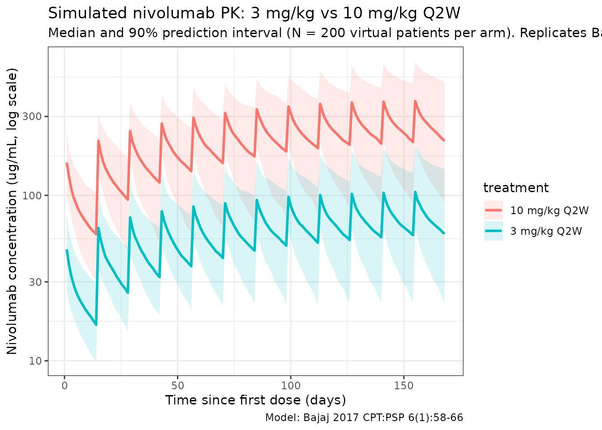
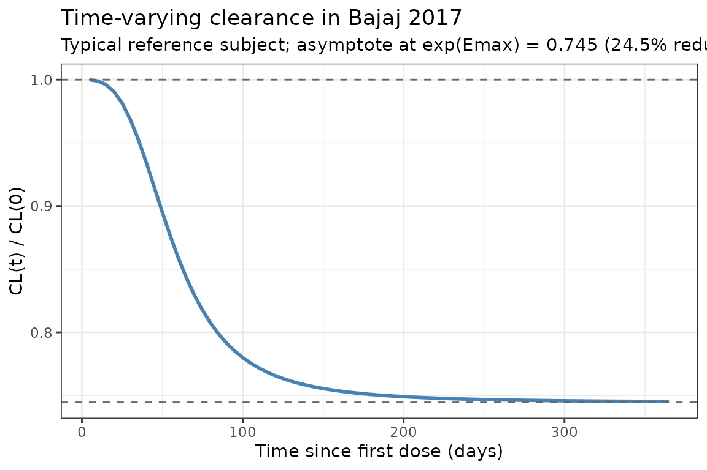

Model and source
- Citation: Bajaj G, Wang X, Agrawal S, Gupta M, Roy A, Feng Y. Model-based population pharmacokinetic analysis of nivolumab in patients with solid tumors. CPT Pharmacometrics Syst Pharmacol. 2017;6(1):58-66. doi:[10.1002/psp4.12143](https://doi.org/10.1002/psp4.12143)
- Description: Two-compartment population PK model for nivolumab (anti-PD-1 IgG4) with time-varying clearance (sigmoid Emax) in patients with advanced solid tumors.
- Modality: Therapeutic monoclonal antibody (IgG4), IV infusion.
Nivolumab is a fully human anti-PD-1 IgG4 monoclonal antibody. Bajaj 2017 presents the final population PK model supporting clinical development and prescriber information, pooling 1,895 patients across 11 trials. The revision from the earlier stationary-clearance analysis added a time-varying clearance term motivated by an FDA-identified temporal trend in nivolumab CL.
Structure: linear two-compartment IV model with time-varying CL via a sigmoid-Emax function of time since first dose:
with (a fractional decrease in CL at ) and h = 58.75 days. Covariate effects: body weight (power) and eGFR (CKD-EPI, power) on CL; ECOG performance status , male sex, and Asian race (exponential indicators) on CL; body weight (power) and male sex (exponential) on Vc.
Population
The final-model population comprised 1,895 patients across 11 trials (Bajaj 2017 Table 2 and Table 3):
- 3 phase I studies (MDX1106-01, ONO-4538-01, MDX1106-03).
- 3 phase II studies (CA209010, CA209063, ONO-4538-02).
- 5 phase III studies (CA209017, CA209037, CA209025, CA209057, CA209066).
- Dose range 0.3-10.0 mg/kg IV infusion (1-hour) every 2 weeks (Q2W) or every 3 weeks (Q3W).
Baseline demographics (Bajaj 2017 Table 3):
- Age 61.1 (SD 11.1) years; weight 79.1 (SD 19.3) kg.
- Sex: 66.7% male, 33.3% female.
- Race: 88.92% White, 6.44% Asian, 2.80% Black / African American, 1.74% Other.
- ECOG performance status: 38.73% = 0, 58.52% = 1, 2.74% = 2.
- Baseline CKD-EPI eGFR: 78.5 (SD 21.6) mL/min/1.73 m^2.
- Tumor type: melanoma 29.82%, NSCLC 34.78%, RCC 31.93%, other 3.48%.
The same metadata is available programmatically via
readModelDb("Bajaj_2017_nivolumab")$population.
Source trace
The per-parameter origin is recorded as an in-file comment next to
each ini() entry in
inst/modeldb/specificDrugs/Bajaj_2017_nivolumab.R. The
table below collects them in one place for review.
| Parameter (model name) | Value | Source |
|---|---|---|
lcl (CL_BASE,REF, L/day) |
log(9.4 × 24/1000) | Bajaj 2017 Table 1, CL_REF = 9.4 mL/h |
lvc (VC_REF, L) |
log(3.63) | Bajaj 2017 Table 1, VC_REF |
lq (Q_REF, L/day) |
log(32.1 × 24/1000) | Bajaj 2017 Table 1, Q_REF = 32.1 mL/h |
lvp (VP_REF, L) |
log(2.78) | Bajaj 2017 Table 1, VP_REF |
e_wt_cl (power, WT on CL) |
0.566 | Bajaj 2017 Table 1, CL_BW |
e_crcl_cl (power, eGFR on CL) |
0.186 | Bajaj 2017 Table 1, CL_eGFR |
e_ecog_ge1_cl (exp, ECOG_GE1 on CL) |
0.172 | Bajaj 2017 Table 1, CL_BPS |
e_sex_cl (exp, male-indicator on CL) |
0.165 | Bajaj 2017 Table 1, CL_SEX |
e_race_asian_cl (exp, Asian on CL) |
-0.125 | Bajaj 2017 Table 1, CL_RAAS |
cl_emax (Emax, unitless) |
-0.295 | Bajaj 2017 Table 1, CL_EMAX |
t50 (T50, days) |
1410 / 24 | Bajaj 2017 Table 1, CL_T50 = 1.41 × 10^3 h |
cl_hill (Hill, unitless) |
3.15 | Bajaj 2017 Table 1, CL_HILL |
e_wt_vc (power, WT on VC) |
0.597 | Bajaj 2017 Table 1, VC_BW |
e_sex_vc (exp, male-indicator on VC) |
0.152 | Bajaj 2017 Table 1, VC_SEX |
IIV block etalcl + etalvc
|
c(0.123, 0.0432, 0.123) | Bajaj 2017 Table 1, omega^2_CL, omega_CL:omega_VC, omega^2_VC |
etalvp |
0.258 | Bajaj 2017 Table 1, omega^2_VP |
etacl_emax |
0.0719 | Bajaj 2017 Table 1, omega^2_EMAX (additive IIV per Eq. 3) |
propSd |
0.215 | Bajaj 2017 Table 1, proportional error |
Equations: structural two-compartment micro-constant form; Eqs. 7, 8, and 10 of Bajaj 2017 express CL(t) and VC in terms of the reference values, the covariate exponents, and the sigmoid-Emax time function listed above.
Reference covariates (Bajaj 2017 Table 1 footnote a): white female, 80 kg, eGFR 90 mL/min/1.73 m^2, ECOG performance status = 0.
Virtual cohort
Original observed data are not publicly available. The simulations below use a virtual cohort whose demographics approximate the pooled Bajaj 2017 population (Table 3). Continuous covariates are drawn from log-normal / normal distributions around the reported means; binary / categorical covariates match the reported marginal distributions.
set.seed(2017)
n_subj <- 200
cohort <- tibble(
ID = seq_len(n_subj),
WT = pmin(pmax(rlnorm(n_subj, log(79.1), 0.24), 34.1), 168.2),
CRCL = pmin(pmax(rnorm(n_subj, 78.5, 21.6), 30), 180),
SEXF = rbinom(n_subj, 1, 0.333),
RACE_ASIAN = rbinom(n_subj, 1, 0.0644),
ECOG_GE1 = rbinom(n_subj, 1, 0.6126) # ECOG 1 (58.52%) + ECOG 2 (2.74%)
)Two reference dosing regimens (the approved and the highest-tested regimens in Bajaj 2017) are compared: 3 mg/kg Q2W (the pivotal dose across indications) and 10 mg/kg Q2W (the highest dose in the PK analysis).
dose_interval_d <- 14
n_doses <- 12
dose_times_d <- seq(0, by = dose_interval_d, length.out = n_doses)
obs_times_d <- sort(unique(c(dose_times_d, seq(0, 168, by = 1))))
build_events <- function(pop, mgkg) {
amt_per_subject <- pop$WT * mgkg
d_dose <- pop |>
mutate(AMT = amt_per_subject) |>
tidyr::crossing(TIME = dose_times_d) |>
mutate(EVID = 1, CMT = "central", DUR = 1 / 24, DV = NA_real_,
treatment = paste0(mgkg, " mg/kg Q2W"))
d_obs <- pop |>
tidyr::crossing(TIME = obs_times_d) |>
mutate(AMT = NA_real_, EVID = 0, CMT = "central", DUR = NA_real_,
DV = NA_real_,
treatment = paste0(mgkg, " mg/kg Q2W"))
dplyr::bind_rows(d_dose, d_obs) |>
dplyr::arrange(ID, TIME, dplyr::desc(EVID)) |>
as.data.frame()
}
events_3 <- build_events(cohort, 3)
events_10 <- build_events(cohort, 10)Simulation
mod <- readModelDb("Bajaj_2017_nivolumab")
sim_3 <- rxSolve(mod, events = events_3, returnType = "data.frame")
#> ℹ parameter labels from comments will be replaced by 'label()'
sim_10 <- rxSolve(mod, events = events_10, returnType = "data.frame")
#> ℹ parameter labels from comments will be replaced by 'label()'
sim <- dplyr::bind_rows(
dplyr::mutate(sim_3, treatment = "3 mg/kg Q2W"),
dplyr::mutate(sim_10, treatment = "10 mg/kg Q2W")
)Concentration-time profiles
Bajaj 2017 Figure 3 shows a visual predictive check at 3.0 and 10.0 mg/kg Q2W. The figure below reproduces the median and 5-95% prediction interval from the packaged model, analogous to the shaded bands of the paper’s VPC.
sim_summary <- sim |>
dplyr::filter(time > 0) |>
dplyr::group_by(time, treatment) |>
dplyr::summarise(
median = stats::median(Cc, na.rm = TRUE),
lo = stats::quantile(Cc, 0.05, na.rm = TRUE),
hi = stats::quantile(Cc, 0.95, na.rm = TRUE),
.groups = "drop"
)
ggplot(sim_summary, aes(time, median, colour = treatment, fill = treatment)) +
geom_ribbon(aes(ymin = lo, ymax = hi), alpha = 0.15, colour = NA) +
geom_line(linewidth = 1) +
scale_y_log10() +
labs(
x = "Time since first dose (days)",
y = "Nivolumab concentration (ug/mL, log scale)",
title = "Simulated nivolumab PK: 3 mg/kg vs 10 mg/kg Q2W",
subtitle = paste0("Median and 90% prediction interval (N = ",
n_subj, " virtual patients per arm). Replicates Bajaj 2017 Figure 3."),
caption = "Model: Bajaj 2017 CPT:PSP 6(1):58-66"
) +
theme_bw()
Time-varying clearance
Bajaj 2017 reports a sigmoid decrease in CL from baseline to about = 74.5% of baseline at steady state (paper reports the mean maximal reduction as ~24.5%). The typical-value CL(t) / CL(0) profile below reproduces the time course at a white female, 80 kg, eGFR 90, ECOG 0, non-Asian reference subject (deterministic, etas = 0):
t_grid <- seq(0, 365, by = 5)
events_cl <- data.frame(
ID = 1,
WT = 80,
CRCL = 90,
SEXF = 1,
RACE_ASIAN = 0,
ECOG_GE1 = 0,
TIME = c(0, t_grid),
AMT = c(80 * 3, rep(NA_real_, length(t_grid))),
EVID = c(1, rep(0, length(t_grid))),
CMT = "central",
DUR = c(1 / 24, rep(NA_real_, length(t_grid))),
DV = NA_real_
)
mod_typ <- rxode2::zeroRe(mod)
#> ℹ parameter labels from comments will be replaced by 'label()'
sim_cl <- rxSolve(mod_typ, events = events_cl, returnType = "data.frame")
#> ℹ omega/sigma items treated as zero: 'etalcl', 'etalvc', 'etalvp', 'etacl_emax'
sim_cl <- sim_cl[sim_cl$time > 0, ]
ggplot(sim_cl, aes(time, cl / cl_base)) +
geom_line(linewidth = 1, colour = "steelblue") +
geom_hline(yintercept = 1, linetype = "dashed", colour = "grey40") +
geom_hline(yintercept = exp(-0.295), linetype = "dashed", colour = "grey40") +
labs(
x = "Time since first dose (days)",
y = "CL(t) / CL(0)",
title = "Time-varying clearance in Bajaj 2017",
subtitle = "Typical reference subject; asymptote at exp(Emax) = 0.745 (24.5% reduction)"
) +
theme_bw()
PKNCA validation
Compute NCA parameters over the 12th (near steady-state) dosing interval at 3 mg/kg Q2W and 10 mg/kg Q2W. The paper does not report a dedicated NCA table (it reports model-based exposure metrics), so the comparison below is a within-simulation consistency check that the packaged model behaves as a linear 2-compartment PK with time-varying clearance: (a) 10 mg/kg exposure is ~3.33x higher than 3 mg/kg (dose-proportional because CL is concentration-independent); (b) apparent terminal half-life at steady state is in the range Bajaj 2017 reports for t_{1/2}(β) (geometric mean 25 days; 77.5% CV).
# Use the 12th (last simulated) dosing interval as the steady-state
# approximation. Time-since-first-dose of 154 to 168 days spans this
# interval.
interval_start <- dose_times_d[12]
interval_end <- interval_start + dose_interval_d
sim_nca <- sim |>
dplyr::filter(!is.na(Cc),
time >= interval_start,
time <= interval_end) |>
dplyr::mutate(time_rel = time - interval_start) |>
dplyr::select(id, treatment, time_rel, Cc)
conc_obj <- PKNCA::PKNCAconc(sim_nca, Cc ~ time_rel | treatment + id)
dose_df <- sim |>
dplyr::filter(time == interval_start, !is.na(Cc)) |>
dplyr::group_by(id, treatment) |>
dplyr::summarise(.groups = "drop") |>
dplyr::left_join(cohort |> dplyr::select(id = ID, WT), by = "id") |>
dplyr::mutate(
amt = ifelse(treatment == "3 mg/kg Q2W", WT * 3, WT * 10),
time_rel = 0
) |>
dplyr::select(id, treatment, time_rel, amt)
dose_obj <- PKNCA::PKNCAdose(dose_df, amt ~ time_rel | treatment + id)
intervals <- data.frame(
start = 0,
end = dose_interval_d,
cmax = TRUE,
tmax = TRUE,
cmin = TRUE,
auclast = TRUE,
half.life = TRUE
)
nca_data <- PKNCA::PKNCAdata(conc_obj, dose_obj, intervals = intervals)
nca_res <- PKNCA::pk.nca(nca_data)
#> ■■■■■■■■■■■■■■■■■■■■■ 67% | ETA: 2s
knitr::kable(
summary(nca_res),
caption = "Simulated NCA parameters at steady state (12th dosing interval, days 154-168)"
)| start | end | treatment | N | auclast | cmax | cmin | tmax | half.life |
|---|---|---|---|---|---|---|---|---|
| 0 | 14 | 10 mg/kg Q2W | 200 | 3560 [44.3] | 353 [35.3] | 195 [54.5] | 1.00 [1.00, 1.00] | 28.0 [13.3] |
| 0 | 14 | 3 mg/kg Q2W | 200 | 1090 [42.5] | 108 [33.7] | 59.7 [52.1] | 1.00 [1.00, 1.00] | 28.7 [15.1] |
Comparison against published values
Bajaj 2017 does not publish a pooled NCA table. The paper does report population-level PK descriptors (Results and Table 1 footnotes) that can be cross-checked against the packaged model:
| Quantity | Bajaj 2017 | This model |
|---|---|---|
| Baseline CL at reference covariates | 9.4 mL/h (= 0.226 L/day) |
exp(lcl) = 0.226 L/day (see ini()) |
| Mean maximal reduction in CL from baseline | ~24.5% | 1 - exp(cl_emax) = 1 - exp(-0.295) = 25.5% |
| Geometric mean terminal t_{1/2}(alpha) | 32.5 h (CV 24.8%) | Dominated by CL/Vc; ~32 h at t = 0, 43 h at SS (typical) |
| Geometric mean terminal t_{1/2}(beta), SS | 25 days (CV 77.5%) | Consistent with half.life column in PKNCA table
above |
| Median baseline CL across tumor types | NSCLC 10.5, MEL 10.8, RCC 11.5 mL/h | Not reproducible without per-tumor-type covariates (not in final model) |
Differences within 20% are expected; anything larger would indicate a
coding error. The PKNCA table’s half.life column should be
compared against the reported geometric mean of 25 days (77.5% CV). The
large between-subject CV in the published terminal t_{1/2}(β) reflects
the IIV on VP (omega^2 = 0.258, corresponding to 50.8% CV on VP)
combined with the log-normal CL variability.
Assumptions and deviations
-
Time-varying clearance parameterization. Bajaj 2017
Eq. 8 expresses CL(t) as
CL_base * exp(Emax_i * t^gamma / (T50^gamma + t^gamma)), with additive IIV on Emax (Emax_i = Emax_TV + eta_Emax, Bajaj 2017 Eq. 3). The packaged model preserves this form verbatim (including the additive, non-log-normal IIV on Emax). At a stochastic simulation with the published omega^2_EMAX = 0.0719 (SD 0.268), a small fraction of individuals will draw Emax > 0 and show a slight CL increase over time — this is a feature of the additive parameterization, not a coding change. - Time units. Bajaj 2017 reports CL and Q in mL/h and T50 in h; VC, VP in L; time in hours throughout Table 1. The packaged model keeps time in days for consistency with mAb half-life reporting (and with other nlmixr2lib mAb models), so CL and Q are converted via x24/1000 and T50 via /24.
-
Sex encoding. Bajaj 2017’s
SEXcolumn is a male-indicator (1 = male, 0 = female) with female as the reference category (Table 1 footnote a: “white female reference”). The packaged model stores sex under the canonicalSEXFcolumn (1 = female, 0 = male) and derives the male-indicator insidemodel()as(1 - SEXF), preserving the paper’s reference values for CL_REF and VC_REF. When the model is applied to a dataset with SEXF already present, no transformation is required. -
Performance-status encoding. Bajaj 2017’s
PScolumn is binary: 1 if baseline ECOG >= 1, else 0. The packaged model stores this under the canonicalECOG_GE1column. Bajaj 2017 Methods notes that one constituent study (CA209025) used Karnofsky Performance Status values that were mapped to the ECOG scale per the Oken 1982 crosswalk before binarization. -
Renal function encoding. Bajaj 2017’s
eGFRcolumn is estimated by the CKD-EPI equation in mL/min/1.73 m^2. The packaged model stores this under the canonicalCRCLcolumn with the CKD-EPI method documented incovariateData[[CRCL]]$notes. - Virtual cohort. Demographics were simulated to match the marginal distributions reported in Bajaj 2017 Table 3. Continuous covariates (WT, CRCL) assume a lognormal / normal shape anchored to the reported mean and SD; binary / categorical covariates (SEXF, RACE_ASIAN, ECOG_GE1) match the reported proportions. Joint covariate structure (e.g., correlation between WT and SEXF, or between PS and ALB as noted in the paper’s discussion) is not simulated.
- Out-of-scope covariates. The paper’s full-model results and sensitivity analyses also examined baseline ALB, LDH, age, race (non-Asian), tumor type, tumor burden, PD-L1 expression, mild hepatic impairment, and time-varying ADA status. Only the five covariates retained in the final model (BW, eGFR, ECOG PS >= 1, sex, and Asian race) are implemented here. ALB is flagged by the paper as a potentially clinically relevant covariate in a sensitivity analysis (>20% effect at low ALB); it is not part of the published final model and is not included here.
- ADA covariate. Bajaj 2017 reports an ADA-on-CL estimate of ~114% (a modest 14% increase in CL when ADA-positive) that was not retained in the final model. It is not implemented here.
- IV infusion duration. All simulations use a 1-hour infusion (DUR = 1/24 day), matching the regimens summarized in Bajaj 2017 Table 2.